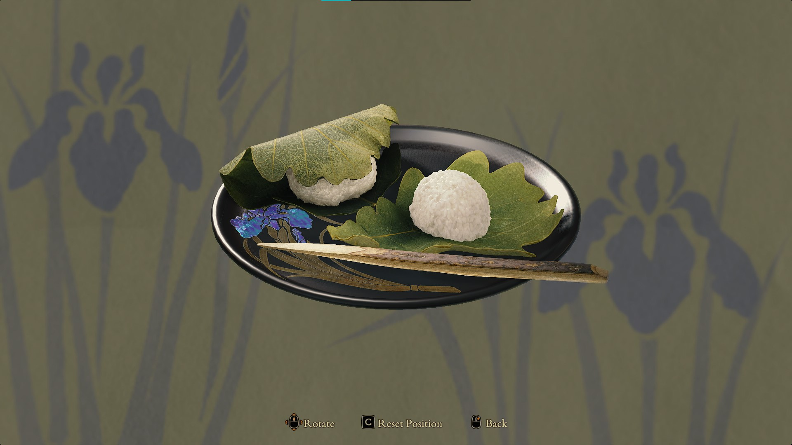
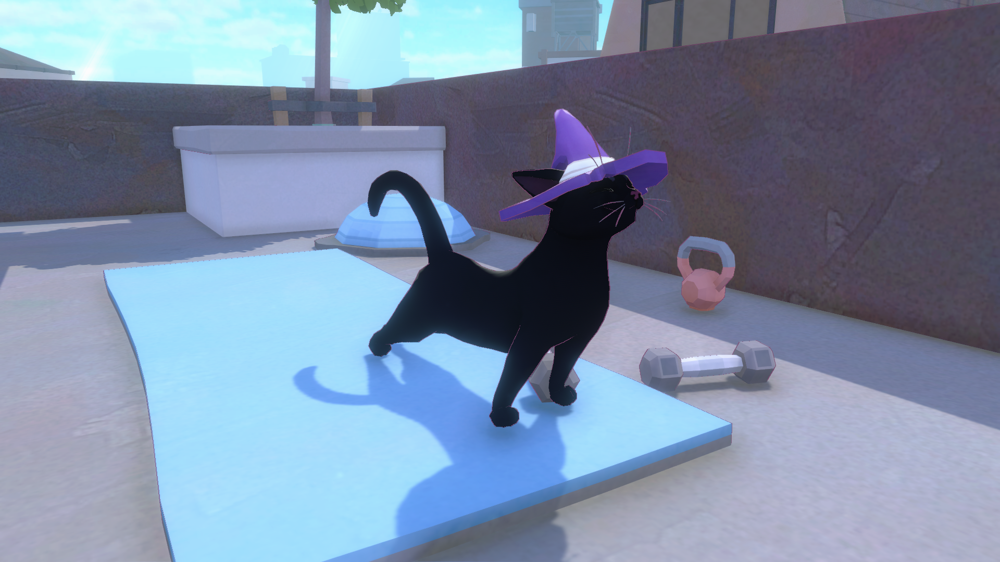

Back...
2024 Game of the Year
It's February and I'm finally caught up on my 2024 gaming and starting to play some 2025 releases (like the sequel to my 2022 GOTY, Citizen Sleeper). I can therefore announce my personal pick for 2024's 'game of the year':
UFO 50
A compilation of 50 retro games, pitched as the collected works of a fictional 80s game studio. A must-buy if you remember gaming in the NES era or earlier, or you're just curious to feel some of that era's vibes. These games are all solid, too. They may not all be to your taste, but these are no mere remakes or minigames: they range from arcade classics with a twist to retro versions of modern genres like tower defense and deckbuilding. It's a love letter to retro gaming, and an impressive output for the six indie developers behind it. At a 25-30$ price point, it's an insanely good deal. I've put 60 hours into it so far and I've barely touched half the games in the collection. Many are couch-play friendly, too - check out games like Pingolf and Paint Chase.
Some of my other favourites so far:
- Magic Garden
- Party House
- Kick Club
- Rock On Island
- Bug Hunter
- Devilition
- Camouflage
Picking a runner-up this year was hard. Sure, I'm tempted to hand it to Balatro (which swallowed many hours of my life in early 2024) but that's too easy. It's this year's indie darling and the dev behind it is no doubt shitting himself at the wild success of the game (5 million+ copies sold, last I heard). Instead, I'll put forth two very different games that surprised me:
Kunitsu-Gami: Path of the Goddess
A unique take on tower defence. The art style wasn't my bag when I first saw this, but then I heard it was a tower defence game... I'm glad I checked this out because I ended up obsessed with this game for a month. It feels like an old-school (PS3/360 era) game in its focus on a few core gameplay elements (there's a 'modern' version of this game that's open world and has a crafting system and long narrative cutscenes and I'm glad this game didn't go there). Also, I love any game that invests in its representations of food. (Last year, games made me hungry for South Asian food. This year, they made me hungry for mochi.)

Little Kitty, Big City
Charming, light, and fun. Certainly the cutest game I played all year. You embody the titular 'little kitty' who must find their way home by exploring the 'big city', completing quests to help its residents, and knocking jars off shelves (you are, after all, a cat). There are some "Untitled Goose Game" vibes here, but this game is kinder and mellower and great for those days when you just want to relax.

And finally, a retrospective award (a.k.a. a pre-2024 game that I first played in 2024):
The Case of the Golden Idol (2022)
I heard some buzz around this when it first came out, but took one look at the art style and tapped out. A sequel, The Rise of the Golden Idol, released in 2024, which prompted me to go back and revisit this one. I'm very glad that I did, because this is exactly the sort of logical puzzle-solving that I looooove.
Lightning round:
- Balatro
Prepare to lose hours of your life. If you haven't played this one yet, ask yourself whether you really need an addiction in your life. This poker rogue-like encourages experimenting with different strategies and has heavy "just one more run..." vibes. Despite the poker theming, it doesn't have anything to do with gambling and you don't have to like poker (I don't).
- Tactical Breach Wizards
Tactical puzzles with a great sense of humour. Turn-based strategy, but think more chess than XCOM. Each room is a concise puzzle to solve, with the possibility to test your solution and undo if it didn't work. The levels are quick to complete and the bonus objectives are very doable. Special mention to the fantastic writing, which actually made me laugh out loud a few times.
- Indika
Weird and philosophical. Everyone should play one weird arthouse indie game a year and this is my recommendation. Play in Russian with subtitles for extra immersion. I don't know if I "liked" this (it's weird and random and mostly a walking sim with some puzzles) but I'm glad someone out there is making games about Russian nuns questioning the nature of faith.
- Botany Manor
Engaging puzzling. Well-crafted puzzles with a cohesive theme, challenging enough to be satisfying but never frustrating enough that I needed a walkthrough. Unlocking new pages in the herbarium and exploring newly-opened parts of the manor is very satisfying.
- Indiana Jones and the Great Circle
The best Indiana Jones content since The Last Crusade. I'm lukewarm on big budget AAA games these days (they're seldom compelling enough to warrant the 10+ hour investment) and I wouldn't call myself an Indiana Jones fan (though I enjoyed the original movie trilogy), so this wasn't a game on my radar until I started hearing good things about it from friends, coworkers, and podcasts. It nails the Indiana Jones vibe and humour and puts the emphasis on exploration, puzzle solving, and stealth over combat.
- Still Wakes the Deep
Very Scottish. I'm not a huge fan of horror, but this was my favourite of the horror games I tried this year (the others being Mouthwashing and Night Bus). The Scottish oil rig setting is compelling and unique, the game did a great job of building atmosphere and tension, and I cared about the characters by the end. At 4 hours long, it moved at a steady clip and didn't overstay its welcome (horror elements definitely lose their punch and become just another piece of gameplay after you've seen them half a dozen times). Props to the team for fully embracing the Scottish setting, from the colourful slang to the option for Scottish Gaelic subtitles.
The full list:
Bold = completed / played at least 10 hours (for games without a linear narrative)
2024:
- Balatro
- Vampire Survivors: Ode to Castlevania
- Slice & Dice
- Indika
- Another Crab's Treasure
- Little Kitty, Big City
- Go Mecha Ball
- Botany Manor
- Home Safety Hotline
- Manor Lords (early access)
- Kunitsu-Gami: Path of the Goddess
- Prince of Persia: The Lost Crown
- UFO 50
- Night Bus
- Thronefall
- Tactical Breach Wizards
- 4D Golf
- Indiana Jones and the Great Circle
- Arctic Eggs
- Still Wakes the Deep
- Arco
- Mouthwashing
- Duck Detective: The Secret Salami
Older:
- Against the Storm (2023)
- Jedi Survivor (2023)
- Sea of Stars (2023)
- Ibb & Obb (2013)
- Fortnite (2017)
- A Little to the Left (2022)
- Cobalt Core (2023)
- Baldur's Gate 3 (2023)
- Returnal (2021)
- Ghost of Tsushima (2020)
- Storyteller (2023)
- Super Mario Bros 3 (1988)
- Endless Space 2 (2017)
- Super Mario Sunshine (2002)
- The Case of the Golden Idol (2022)
- Jamestown+ (2011)
Posted: February 2025